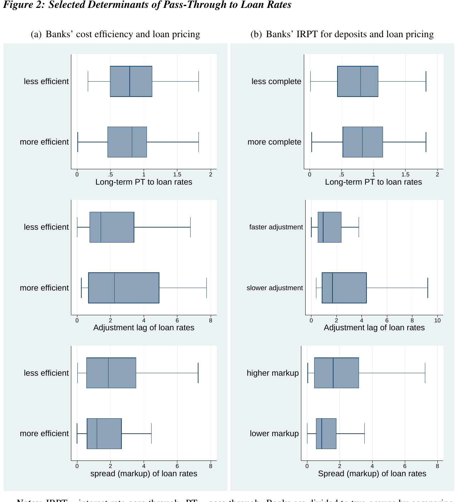
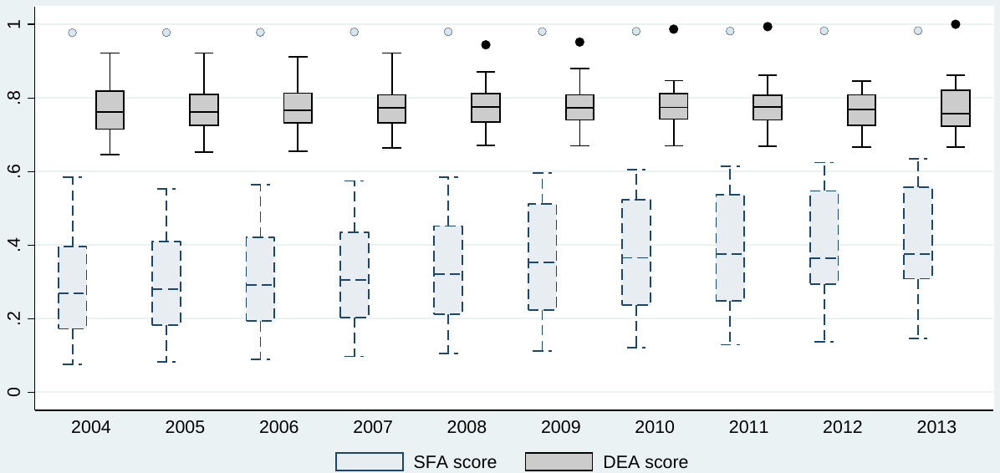
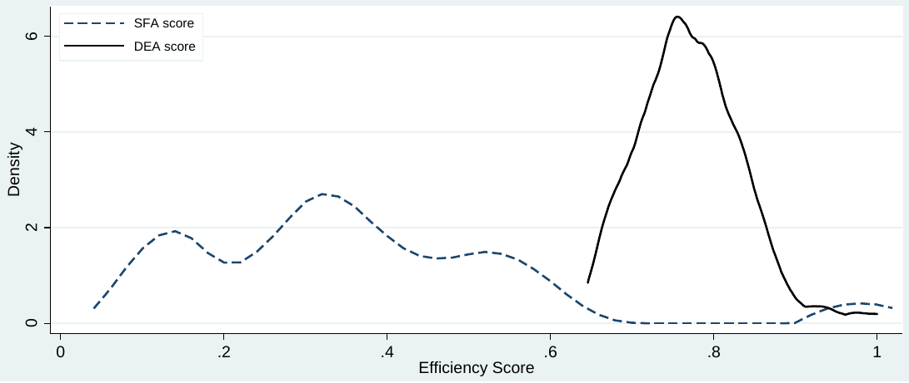

Bank efficiency and interest rate pass-through: Evidence from Czech loan products
Tomas Havranek, Zuzana Irsova, Jitka Lesanovska (2016), "Bank efficiency and interest rate pass-through: Evidence from Czech loan products." Economic Modelling 54: 153-169. doi.org/10.1016/j.econmod.2016.01.004 The text here is the working paper. It is Czech National Bank Working Paper 9/2015, the openly available version; the version of record is behind the publisher's paywall. The working paper carries a Czech abstract and a nontechnical summary, which the journal article does not, its title page prints "Pass-Trough" for "Pass-Through", and its typesetting drops the accents from several names in the reference list, which are reproduced as printed.
Tomas Havranek, Zuzana Irsova, and Jitka Lesanovska
Tomas Havranek, Economic Research Department, Czech National Bank, and Institute of Economic Studies, Charles University, Prague, tomas.havranek@cnb.cz
Zuzana Irsova, Institute of Economic Studies, Charles University, Prague, zuzana.irsova@ies-prague.org
Jitka Lesanovska, Financial Market Supervision Department, Czech National Bank, and Institute of Economic Studies, Charles University, Prague, jitka.lesanovska@cnb.cz
We thank Jan Babecky, Niels-Jakob Harbo Hansen, Michal Hlavacek, Branislav Saxa, Jakub Seidler, Sonke Sievers, Borek Vasicek, and seminar participants at the Czech National Bank and Charles University in Prague for comments and acknowledge support from the Czech National Bank (project #C3/14). Lesanovska acknowledges support from the Grant Agency of Charles University (grant #1682214). The views expressed here are ours and not necessarily those of the Czech National Bank.
Abstract
An important component of monetary policy transmission is the pass-through from financial market interest rates, directly influenced or targeted by central banks, to the rates that banks charge firms and households. Yet the available evidence on the strength and speed of the pass-through is mixed and varies across countries, time periods, and even individual banks. We examine the pass-through mechanism using a unique data set of Czech loan and deposit products and focus on bank-level determinants of pricing policies, especially cost efficiency, which we estimate employing both stochastic frontier and data envelopment analysis. Our main results are threefold: First, the long-term pass-through was close to complete for most products before the financial crisis, but has weakened considerably afterward. Second, banks that provide high rates for deposits usually charge high loan markups. Third, cost-efficient banks tend to delay responses to changes in the market rate, smoothing loan rates for their clients.
Keywords: Bank pricing policies, cost efficiency, data envelopment analysis, monetary transmission, stochastic frontier analysis. JEL Codes: E43, E58, G21.
Abstrakt
Důležitou součástí transmise měnové politiky je průsak změn sazeb finančního trhu, které přímo ovlivňují nebo cílují centrální banky, do sazeb, které banky stanovují pro firmy a domácnosti. Dosavadní výzkumné studie naznačují, že síla a rychlost tohoto průsaku se liší mezi zeměmi, časovými obdobími, a dokonce i mezi jednotlivými bankami. V tomto článku analyzujeme mechanismus průsaku na unikátním souboru dat, který pokrývá české depozitní a úvěrové produkty. Zaměřujeme se na roli determinant cenové politiky jednotlivých bank, a to zejména na roli nákladové efektivity bank, kterou odhadujeme pomocí stochastické hraniční analýzy a analýzy obalu dat. Naše hlavní výsledky jsou následující: Zaprvé, dlouhodobý průsak úrokových sazeb byl před krizí u většiny produktů téměř kompletní, ale poté výrazně zeslábl. Zadruhé, banky, které poskytují vysoké úrokové sazby na depozita, také často vyžadují vyšší rizikové prémie na úvěry. Zatřetí, nákladově efektivní banky často oddalují reakce svých sazeb na změny mezibankovních sazeb, čímž vyhlazují úrokové míry pro své klienty.
Nontechnical Summary
In this paper we investigate the interest rate pass-through mechanism in the Czech banking sector using product-level data for both before and after the height of the financial crisis, which we define as the fall of Lehman Brothers. We find strong and almost complete long-term pass-through from financial market rates to the rates that banks charge their clients before the crisis, but document a substantial deterioration of pass-through after the crisis (with the exception of mortgage rates). This result is consistent with the findings of Hristov et al. (2014) for the euro area, who show that the pass-through mechanism has become significantly distorted after 2008.
Next, we find a relationship between bank pricing policies for deposits and loans: banks that offer large spreads between the deposit rate and the corresponding money market rate tend to charge high loan markups to their clients. We are not aware of any previous study examining this particular relationship, but the results are in line with anecdotal evidence, as banks offering generous deposit rates tend to be involved in the riskier segment of the loan market. Finally, our results suggest that banks’ cost efficiency is not significantly related to loan markups, which contrasts with the results of Schlter et al. (2012) for German banks. Similarly to Schlter et al. (2012), however, we find that more cost-efficient banks tend to smooth loan rates.
To obtain the results we use estimators developed for heterogeneous panel data, previously employed, for example, by Horvath and Podpiera (2012). The advantage of these methods is that we can allow for differences in short- and long-term pass-through across individual banks and test for heterogeneity in pricing policies in the long run with respect to the short run. Our methodological contribution to the literature is the use of weighted least squares when estimating the determinants of pricing policies: because for some banks the corresponding pass-through coefficients are estimated imprecisely, we discount them by giving more weight to more precise estimates.
1. Introduction
To understand the process of monetary policy transmission in their country well, central bankers need to know how financial market interest rates pass through to client rates corresponding to various loan and deposit products offered by commercial banks. With more widespread availability of bank- and product-level data in recent years, researchers have begun to explore the determinants of the pass-through mechanism at the level of individual banks (for example, de Graeve et al., 2007; Gambacorta, 2008), which yields more granulated information for policy makers. Nevertheless, the empirical examinations of interest rate pass-through often produce different results depending on the country or time period under investigation, and hence recommendations cannot be easily carried from one examined country to another. The role of the late 2000s financial crisis on the pass-through mechanism is especially unclear, with some studies suggesting little change in transmission (Illes and Lombardi, 2013), some significant distortion in pass-through (Hristov et al., 2014), and some changes in transmission only for certain products (Hansen and Welz, 2011).
Using a unique data set for the Czech Republic, we provide a comprehensive study of the interest rate pass-through before and after the fall of Lehman Brothers and explore the relationships between the pricing policies of individual banks and bank characteristics. The case of the Czech Republic is interesting because, among other things, its banking sector remained stable during the crisis and did not suffer the tremors that affected many other European countries. Any change in pass-through, therefore, can be interpreted as a change in pricing policies, not a change induced by banks’ liquidity problems. To be specific, we focus on the role of banks’ cost efficiency, which has been shown for some other developed countries to be associated with the pass-through mechanism (Schlter et al., 2012). Our analysis consists of three main steps. First, we estimate the interest rate pass-through for each product both before and after the crisis. Each product category is paired with a corresponding financial market interest rate according to the term structure. For the estimation we use the mean group estimator (Pesaran and Smith, 1995) and pooled mean group estimator (Pesaran et al., 1999), which take into account bank-level heterogeneity in pricing policies.
Second, we estimate cost efficiency scores for each bank both before and after the crisis. To our knowledge, we provide the first examination of changes in the cost efficiency of Czech banks after the crisis and employ both stochastic frontier analysis and data envelopment analysis. Third, we extract pass-through coefficients for individual banks, focusing on the strength of the long-term pass-through (the equilibrium response of bank rates to changes in the corresponding market rate), the mean adjustment lag between the short and the long term, and the spread (markup) between the bank and market rates. We then relate these coefficients to the characteristics of each bank. In contrast to previous studies that examine heterogeneity in pricing policies, we use weighted least squares estimation where more precise estimates of the pass-through coefficients for individual banks get more weight.
Our results suggest that the financial crisis changed the pass-through mechanism dramatically. Before the crisis the long-term pass-through was close to complete for most products, but after 2008 it weakened for all product categories except mortgages. Moreover, average spreads between bank and market rates increased a lot and banks started to change their rates more frequently. Both before and after the crisis we find evidence of significant heterogeneity in bank pricing policies in the short run, but less so in the long run, which is consistent with the results of Gambacorta (2008) and Horvath and Podpiera (2012). Concerning the determinants of pricing policies, we find that the pass-through mechanism for deposit products influences the given bank’s pass-through for loan products. To be specific, large markups in loan rates over the corresponding market rates are associated with large spreads between deposit rates and market rates. In other words, banks that offer attractive deposit rates usually charge high loan markups, which reflects more risk taking. Finally, we find that cost-efficient banks tend to respond to changes in market rates with longer lags, thus smoothing loan rates, which is in line with Schlter et al. (2012). We fail to find any strong relationship between banks’ cost efficiency and loan markups.
The remainder of the paper is structured as follows: section 2 discusses some of the related literature on the topic. Section 3 briefly describes the main features of the data set used for the estimation. Section 4 presents the analysis of the pass-through mechanism before and after the crisis. Section 5 describes the stochastic frontier and data envelopment analysis approaches. Section 6 explores the determinants of bank-level pass-through coefficients. Section 7 concludes the paper. Appendix A presents several robustness checks of our main results, while Appendix B shows supplementary information related to the estimation of cost efficiency.
2. Related Literature
The authoritative literature survey by de Bondt (2005) concludes that most empirical studies on the topic report that the pass-through of market interest rates to bank lending rates is incomplete in the short run and that the speed of adjustment between the rates varies across countries. On the other hand, in the long run the interest rate pass-through is typically found to be close to complete. The existing studies take into account various bank products, separating corporate loans from household loans (Hansen and Welz, 2011) and differentiating between the loan amount of corporate loans and between mortgages and consumer loans (Hristov et al., 2014). For example, studies like Rocha (2012), Belke et al. (2013), and Aristei and Gallo (2014) find more complete long-run pass-through for corporate loans than for household loans.
Holton and Rodriguez dAcri (2015) report the extent of pass-through to be weaker for smaller corporate loans than for larger corporate loans in the euro area during the late 2000s crisis. Another study of pass-through during the crisis period, Hansen and Welz (2011), finds impaired long-term pass-through in Sweden specifically for loans with a long interest rate fixation. In contrast, Illes et al. (2015) use the weighted average cost of funds as a proxy for European market rates and find that the pass-through mechanism remained stable throughout the crisis. Moreover, Rocha (2012) analyzes the interest pass-through for deposit rates in Portugal and reports that the long-term pass-through is incomplete and the adjustment of deposit rates is faster for rate decreases than for rate increases. A similar result is obtained by Belke et al. (2013) for euro area lending rates.
While the previously discussed stream of literature focuses on the general question of whether the interest rate pass-through mechanism works and what the speed of adjustment is, several recent studies have tried to explain what bank characteristics (or banking sector characteristics) explain the heterogeneity in interest rate pass-through across banks (or countries): see, for example, Sander and Kleimeier (2006), de Graeve et al. (2007), Gambacorta (2008), or more recent studies by Stanisawska (2014) and Holton and Rodriguez dAcri (2015). A wide range of bank-level factors, including liquidity, capital adequacy, and relationship banking, have been explored as potential determinants of the interest rate pass-through mechanism. Gambacorta (2008) and de Graeve et al. (2007) conclude that well-capitalized and liquid banks are less sensitive to market interest rate changes. Nevertheless, these findings apparently do not hold for Polish banks (Stanisawska, 2014), which highlights the heterogeneity of results found in the literature and the need for more empirical research on the pass-through mechanism in post-transition countries. In a detailed study of the determinants of interest rate spreads in the Czech Republic, Hainz et al. (2014) find that bank characteristics are important for the setting of spreads for mortgages and small corporate loans, but matter little for consumer loans and large corporate loans.
One of the frequently investigated bank-level characteristics is cost efficiency. The usual proxies for cost efficiency involve simple accounting-based ratios, such as the total-costs-to-total-assets ratio, total-costs-to-total-revenues ratio, and cost-income ratio (Koetter et al., 2006; de Graeve et al., 2007). Bauer et al. (1998), however, argue that these financial ratios do not sufficiently capture banks’ efficiency as they are driven by price differences and other exogenous factors. Schlter et al. (2012) employ stochastic frontier analysis for cost efficiency estimation in their examination of interest rate pass-through in the German banking sector. Their findings suggest that more cost efficient banks can be expected to offer more competitive lending rates in comparison to less efficient banks. Although there are studies estimating the cost efficiency of Czech banks using stochastic frontiers (Podpiera and Podpiera, 2005; Podpiera et al., 2007; Irsova and Havranek, 2011) or deterministic frontiers (Havranek and Irsova, 2013), these scores have not been used as a determinant of bank-specific interest rate pass-through for the Czech Republic. Moreover, we are not aware of any other study focusing on an emerging or post-transition economy that relates interest rate pass-through to properly computed measures of efficiency.
Several studies have estimated the interest rate pass-through mechanism in the Czech banking sector. Egert et al. (2007) investigate pass-through in several countries of Central and Eastern Europe during the period 1994–2005. They find insignificant pass-through for household loans but nearly full pass-through for long-term non-financial companies’ loans. In contrast, Tieman (2004), examining the 1995–2004 period, suggests that the long-run pass-through in the Czech Republic is incomplete. Horvath and Podpiera (2012) examine the link between the money market rate and bank interest rate during the period 2004–2008 and find well-functioning, although not full, pass-through for both mortgages and corporate rates in the long run. They also investigate interest rate pass-through heterogeneity on the bank level, finding evidence that banks with a stable pool of deposits smooth interest rates and require a higher spread as compensation. Nevertheless, the above-mentioned studies do not use frontier approaches to capture and control for cost efficiency and do not examine the potential changes in pass-through related to the financial crisis.
3. Data
The computations in this paper are based on bank-level data and data on money market rates covering the period between January 2004 and December 2013, where the starting date is given by the availability of most bank-specific data that we need for the analysis. The main data set covers 52 banks1 and is obtained from the Czech National Bank’s internal databases. For the analysis of interest rate pass-through we use monetary statistics data regarding the interest rates charged on new loans and paid on deposits; for the analysis of cost efficiency and determinants of banks’ pricing policies we use a regulatory data set which consists of data from bank balance sheets, income statements, and capital adequacy information. The money market data include Czech interbank interest rates, interest rate swaps, and Czech government bond rates obtained from Bloomberg.
| Firm rates | |
|---|---|
| Small loans, floating | Commercial loans up to CZK 30M, interest rate floating or fixed up to 1 year |
| Small loans, fixed | Commercial loans up to CZK 30M, interest rate fixed more than 1 year |
| Large loans, floating | Commercial loans larger than CZK 30M, interest rate floating or fixed up to 1 year |
| Large loans, fixed | Commercial loans larger than CZK 30M, interest rate fixed more than 1 year |
| Household rates | |
| Mortgages | Loans for house or apartment purchase |
| Consumer loans | Loans for household spending on (mostly) durable goods |
| Deposit rates | |
| Overnight deposits | Deposits from clients with a withdrawal term up to 1 day |
| Term deposits | Deposits from clients with a withdrawal term more than 1 day |
The bank-level data on new loans display a monthly frequency, and loans in foreign currencies are excluded from the computations.2 We follow Horvath and Podpiera (2012) in the differentiation of several loan product categories and summarize them in Table 1. With respect to the product type of a loan, we assume four basic categories: small corporate loans up to CZK 30 million and large corporate loans above CZK 30 million provided to firms, and mortgages3 and consumer loans provided to households.4 Corporate loans are further divided with respect to interest rate fixation into the following categories: “floating interest rate loans” represented by loans with truly floating rates and those with rates fixed for up to 1 year; and “fixed interest rate loans” with rates fixed for more than 1 year. To analyze the interest rate pass-through mechanism from market rates to bank deposit rates, we additionally collect information on bank deposits and distinguish overnight deposits from term deposits.
The bank-level information used for the computation of efficiency scores results in a highly unbalanced data set. Table B1 in Appendix B shows the summary statistics of the variables that we use to estimate the stochastic frontier. The definition of output and input prices employed in the cost function follows the intermediation approach explained by (Berger and Humphrey, 1997). We assume three distinct types of outputs: commercial loans, inter-bank loans, and securities; three inputs: fixed assets, borrowed funds, and labor; and one netput: equity capital. Total costs are defined as the sum of interest and non-interest expenses. The cost function further includes a time trend and inefficiency covariates, some of which also serve as potential determinants of interest rate pass-through (see Table 2 for more details).
The inefficiency covariates cover individual bank-specific characteristics. Among these characteristics we include profitability ratios such as return on assets and return on equity, the liquidity ratio measuring the share of liquid assets in banks’ balance sheets (quick assets to total assets), leverage of banks (equity over assets), and three ratios computed from regulatory data describing the resilience of banks by the share of regulatory capital in risk-weighted assets (capital adequacy ratio), credit risk in banks balance sheets by the share of non-performing loans in the bank balance sheet (credit risk to total assets), and the share of risky assets in the bank balance sheet (risk-weighted to total assets).
Table B2 in Appendix B shows the summary statistics of the variables used to estimate the deterministic frontier scores of different banks. Since the computation of the deterministic frontier requires the panel data to be fully balanced, deterministic estimation only employs a sub-sample of the entire data set used for stochastic estimation and thus serves as a mere robustness check in our analysis. To conduct both frontier analyses we are able to exploit data on 35 Czech banks in total, but this number gets smaller for the individual frontier analyses of the pre- and post-crisis periods.
| Variable | Definition |
|---|---|
| Bank size | Assets of i-th bank/median bank assets |
| Capital adequacy | Regulatory capital/risk-weighted assets |
| Cost efficiency | Frontier estimates from section 5 |
| Credit risk | Non-performing loans/total assets |
| Deposits | Deposits/liabilities |
| Liquidity | Quick assets/total assets |
The money market data that we use in the paper consist of the yields on instruments that are relevant to banks’ decision making concerning the setting of interest rates on their products (see Table 3 in the following section). The short-term market interest rates are represented by the CZEONIA reference interest rate and by Czech money market benchmark rates (PRIBORs) with maturities of up to one year. While CZEONIA is the average interest rate on unsecured overnight deposits placed by banks on the market on a given date, PRIBOR is the average quotation of reference banks for the sale of deposits. CZEONIA would be the preferred rate for our analysis, but it is only available for overnight deposits and not for longer maturities. Long-term market interest rates are represented by Czech interest rate swaps and yields on Czech government bonds with maturities of up to 10 years.
4. Pass-Through Estimation
We employ the error-correction model framework to examine how financial market interest rates are passed through to the rates that banks charge borrowers and the rates that banks pay to depositors. The framework assumes a long-term equilibrium relationship between the market rate and the bank rate: the bank sets its rate according to its cost of funds, determined by the corresponding market rate, and adds a markup. The long-term relationship is important and determines the ultimate strength of the pass-through mechanism. Nevertheless, it is also important to look at the immediate (short-term) reaction of bank rates to changes in the market rate and the adjustment process between the short and long run. The error-correction model allows us to make inference regarding all these aspects of interest rate pass-through.
Because we work with product- and bank-level data, we estimate the model using dynamic heterogeneous panel techniques; our most flexible estimator is the mean group estimator (Pesaran and Smith, 1995), which allows each regression coefficient to vary across banks. Pesaran and Smith (1995) show that the traditional panel estimators, such as fixed effects, which restrict all coefficients except intercepts to be equal across panels, may easily yield inconsistent results. The mean group estimator can be described in the following way:
where stands for the change in bank 's rate on product between months and (due to data limitations we use a maximum of one lag in all estimations of the pass-through mechanism), is the change in the corresponding financial market interest rate in period for product , measures the short-term pass-through of the market rate to bank 's rate for product , is the change in the bank rate in the previous month, captures persistence in bank rate changes, denotes the long-term equilibrium pass-through coefficient, is the mean markup (spread) over the market rate, denotes the speed of adjustment, and is a disturbance term. The mean adjustment lag at which the market rates are fully passed through to the bank rates can be computed as (δ − α)/γ (Hendry, 1995).
The mean group estimator is very flexible, but Pesaran et al. (1999) show that a compromise between traditional estimators (restricting all slope coefficients to be equal) and the mean group estimator can be the preferred choice under certain conditions. They introduce the so-called pooled mean group estimator, which allows the short-run coefficients to vary across panels, but restricts the long-term equilibrium relationship to be the same for all banks. The pooled mean group estimator is often more efficient than the mean group estimator, and the advantage gets significant when the number of panels in the data set is relatively small, which is the case with Czech data. We specify the pooled mean group estimator as follows:
A qualification of this methodology is in order: the method assumes spreads that are constant across the time period under examination. If, however, spreads increase gradually, the estimated long-run pass-through might be biased. Consider, for example, the case of the Czech economy during the financial crisis, when risk aversion (and thus spreads) was rising, while market rates were decreasing. A failure of client rates to react to a decrease in market rates might thus be associated with rising spreads, not with a lack of pass-through. Nevertheless, the spreads rose quite steeply after the fall of Lehman Brothers and did not continue to increase during the rest of the period, so we expect the potential bias to be modest.
An important step in the estimation of the pass-through mechanism is the selection of the financial market interest rate corresponding to each product rate. The market rates serve as the cost of funds for banks, and it is intuitive to assume that term structure will play a crucial role in determining the association between different market and product rates. For example, for loans with floating rates we expect market rates with short maturities to serve as the corresponding cost of funds. In contrast, mortgage rates should be associated with the rates of return of instruments with several-year maturities, such as ten-year government bonds. Following previous literature on the interest rate pass-through (for example, Schlter et al., 2012), we evaluate the correlations between market and product rates and choose the market rate with the highest correlation for each product rate. It is worth noting that our main results presented later in this paper hold irrespective of the financial market rate used as a reference for each product category (the market rates are highly correlated with each other).
| CZEONIA | 1M PRIBOR | 3M PRIBOR | 6M PRIBOR | 1Y PRIBOR | |
|---|---|---|---|---|---|
| Firm rates | |||||
| Small loans, floating | 0.517 | 0.537 | 0.541 | 0.544 | 0.542 |
| Small loans, fixed | 0.079 | 0.116 | 0.142 | 0.173 | 0.190 |
| Large loans, floating | 0.660 | 0.698 | 0.709 | 0.716 | 0.715 |
| Large loans, fixed | 0.199 | 0.208 | 0.216 | 0.223 | 0.227 |
| Household rates | |||||
| Mortgages | 0.280 | 0.295 | 0.300 | 0.305 | 0.309 |
| Consumer loans | -0.018 | -0.012 | -0.010 | -0.009 | -0.010 |
| Deposit rates | |||||
| Overnight deposits | 0.202 | 0.202 | 0.201 | 0.199 | 0.196 |
| Term deposits | 0.491 | 0.514 | 0.524 | 0.524 | 0.520 |
| IRS1 | IRS2 | IRS3 | IRS5 | IRS10 | YTM2 | YTM5 | YTM10 | |
|---|---|---|---|---|---|---|---|---|
| Firm rates | ||||||||
| Small loans, floating | 0.529 | 0.518 | 0.509 | 0.493 | 0.479 | 0.527 | 0.517 | 0.472 |
| Small loans, fixed | 0.131 | 0.151 | 0.154 | 0.145 | 0.135 | 0.146 | 0.221 | 0.273 |
| Large loans, floating | 0.689 | 0.664 | 0.644 | 0.610 | 0.577 | 0.673 | 0.639 | 0.572 |
| Large loans, fixed | 0.208 | 0.218 | 0.226 | 0.230 | 0.235 | 0.218 | 0.257 | 0.276 |
| Household rates | ||||||||
| Mortgages | 0.297 | 0.310 | 0.323 | 0.332 | 0.341 | 0.316 | 0.367 | 0.379 |
| Consumer loans | -0.022 | -0.023 | -0.021 | -0.017 | -0.010 | -0.018 | -0.003 | 0.010 |
| Deposit rates | ||||||||
| Overnight deposits | 0.197 | 0.187 | 0.179 | 0.170 | 0.163 | 0.192 | 0.169 | 0.140 |
| Term deposits | 0.497 | 0.468 | 0.449 | 0.420 | 0.393 | 0.477 | 0.444 | 0.392 |
Notes: Averaged over the banks in the sample; the largest correlations for each product category are shown in bold. CZEONIA = Czech Overnight Index Average; the weighted average of the interest rates of unsecured overnight deposits placed by banks on the interbank market. PRIBOR = Prague Interbank Offer Rate; the average rate at which banks are willing to lend to each other. IRS = interest rate swaps. YTM = yield on Czech government bonds.
The correlations, computed as mean values across individual banks’ correlation coefficients, are shown in Table 3: the results are intuitive. Regarding small loans (under CZK 30 million) provided to non-financial companies with either flexible rates or fixed rates for up to one year, we find that the most promising cost of funds is the 6-month PRIBOR (the correlation coefficient is 0.544). In contrast, for small loans with rates fixed for a longer period than one year the market rate with the highest correlation is the rate on the 10-year Czech government bond (but the correlation is lower than in the previous case: only 0.273). The results are very similar when we consider large loans (above CZK 30 million) instead of small loans. The 6-month PRIBOR is the corresponding rate for loans with floating or short fixed rates, and the correlation is 0.716. For longer fixations the most promising cost of funds is captured by the yield on the 10-year government bond (correlation 0.276). Concerning household products, we find that mortgage rates are associated the most with yields on the 10-year government bond, which is again intuitive; the correlation is 0.379. In contrast, we fail to find any financial market rate that shows a statistically significant correlation with the rate on consumer loans. The largest correlation is again with the rate on the 10-year government bond, but the correlation coefficient of 0.01 is negligible. It follows that using Czech data we cannot pursue a reasonable analysis of the pass-through of market rates to consumer loans; consumer loan rates seem to be driven by factors other than market interest rates. Next, we turn to deposit rates. Rates on overnight deposits are correlated the most with the 1-month PRIBOR (correlation 0.202), while the mean rate on term deposits is driven by the 6-month PRIBOR (correlation 0.524). These results are consistent with a similar correlation analysis for Czech data presented in Kucharcukova et al. (2013).
Because our intention is to use the error-correction model framework, we need to make sure that our time series are indeed non-stationary and that the product rates are cointegrated with the corresponding market rates. To test for non-stationarity we employ Fisher’s unit root test (Maddala and Wu, 1999), which allows for the examination of unbalanced panel data; the results suggest that for each of the product rates in our sample and the corresponding market rates with the largest correlation coefficients we cannot reject the null hypothesis of non-stationarity. Next, to test for cointegration we resort to the Pedroni (1999) residual test, which can also handle unbalanced panel data (the results are not reported in full, but are available on request). We reject the null hypothesis of no cointegration for each pair of product and market interest rates with the exception of consumer loans—but we have already noted that the correlation between the rate on consumer loans and any of the financial market rates is negligible; therefore, we will not evaluate the pass-through mechanism for consumer loan rates.5
To choose between the mean group estimator and the pooled mean group estimator we employ the Hausman test and evaluate whether the assumption of homogeneity of the long-term coefficients holds across banks. The hypothesis cannot be rejected at the 5% level, and we thus opt for the pooled mean group estimator, which is more efficient, and report the corresponding results in the main body of the manuscript. In Appendix A we present the results of the mean group estimator (Table A1 and Table A2), from which we would draw similar conclusions. While we prefer the pooled mean group estimator for the evaluation of the pass-through mechanism, the mean group estimator is necessary for the next step of our analysis (determinants of pricing policies), because for that we need to extract bank-level coefficients for each aspect of interest rate pass-through, including the long-term equilibrium relationship, which is restricted to be the same across banks by the pooled mean group estimator.
Table 4 shows the results of the pooled mean group estimator for interest rate pass-through in the Czech banking system for the period 2004:01–2008:08; that is, from the start of our data sample to the onset of the financial crisis (the sub-prime mortgage crisis had not affected the Czech economy much before Lehman Brothers fell, but our main results hold even if we define the beginning of the crisis as summer 2007 or, alternatively, the start of 2009). The table shows almost complete long-term pass-through for most products—the long-term coefficients tend to be close to one, indicating that financial market rates are fully transmitted to the rates that banks charge their clients. The only exceptions in this respect are mortgages and overnight deposits, where the pass-through is far from complete (45% for mortgages and 28% for overnight deposits). These findings point to a well-functioning transmission mechanism before the financial crisis.
The estimated error-correction parameters are in all cases negative and statistically significant, which suggests that the error correction model is specified well: if the bank rate exceeds the rate that
| Firm rates | Households | Deposit rates | |||||
|---|---|---|---|---|---|---|---|
| Small loans, floating | Small loans, fixed | Large loans, floating | Large loans, fixed | Mortgages | Overnight deposits | Term deposits | |
| Long-term PT | 0.970*** | 1.343*** | 1.133*** | 0.896* | 0.453*** | 0.282*** | 0.905*** |
| (0.0279) | (0.152) | (0.0359) | (0.543) | (0.0423) | (0.0207) | (0.0123) | |
| Error corr. | -0.653*** | -0.451*** | -0.546*** | -0.889** | -0.378*** | -0.317*** | -0.307*** |
| (0.0931) | (0.109) | (0.0745) | (0.38) | (0.0831) | (0.0727) | (0.049) | |
| Short-term PT | 0.381** | 0.822 | 0.943** | -3.716** | 0.0448 | 0.168** | 0.282*** |
| (0.194) | (0.585) | (0.412) | (1.827) | (0.0494) | (0.0652) | (0.0474) | |
| Persistence | -0.116** | -0.193*** | -0.140*** | -0.0926 | 0.0723 | -0.121*** | -0.0742* |
| (0.0474) | (0.0669) | (0.045) | (0.296) | (0.0666) | (0.0415) | (0.0395) | |
| Spread | 1.319*** | 1.284*** | 0.573*** | 1.599*** | 1.161*** | 0.0957 | -0.105*** |
| (0.193) | (0.416) | (0.156) | (0.221) | (0.281) | (0.0817) | (0.032) | |
| Adjustment lag | 0.9 | 1.2 | 0.3 | 5.2 | 1.1 | 0.4 | 2 |
| Observations | 849 | 427 | 693 | 48 | 888 | 1623 | 1551 |
Notes: Estimated for the period 2004:01–2008:08 by the pooled mean group estimator (Pesaran et al., 1999); standard errors are shown in parentheses. The mean adjustment lag is computed as (short-term PT minus long-term PT)/(error correction) and is denominated in months. PT stands for pass-through. * denotes statistical significance at the 10% level, ** at the 5% level, and *** at the 1% level.
| Firm rates | Households | Deposit rates | |||||
|---|---|---|---|---|---|---|---|
| Small loans, floating | Small loans, fixed | Large loans, floating | Large loans, fixed | Mortgages | Overnight deposits | Term deposits | |
| Long-term PT | 0.842*** | 0.792*** | 0.870*** | 0.696*** | 0.842*** | 0.0515*** | 0.279*** |
| (0.0371) | (0.17) | (0.0342) | (0.259) | (0.06) | (0.0073) | (0.0295) | |
| Error corr. | -0.541*** | -0.607*** | -0.860*** | -1.379*** | -0.098*** | -0.178*** | -0.089*** |
| (0.0927) | (0.14) | (0.305) | (0.196) | (0.0374) | (0.0337) | (0.0125) | |
| Short-term PT | 0.216 | 0.32 | -1.737 | 0.542 | 0.0334 | 0.0589 | 0.277*** |
| (0.352) | (0.499) | (2.762) | (1.132) | (0.0299) | (0.0447) | (0.048) | |
| Persistence | -0.227*** | -0.0407 | -0.085 | -0.125 | -0.00745 | -0.170*** | -0.0328 |
| (0.0544) | (0.053) | (0.0733) | (0.217) | (0.0613) | (0.0351) | (0.0661) | |
| Spread | 1.463*** | 3.324*** | 2.294*** | 5.515*** | 0.105*** | 0.0891*** | 0.0693*** |
| (0.238) | (1.123) | (0.854) | (0.223) | (0.0402) | (0.0213) | (0.0155) | |
| Adjustment lag | 1.2 | 0.8 | 3 | 0.1 | 8.3 | 0 | 0 |
| Observations | 930 | 354 | 742 | 44 | 1081 | 1966 | 1869 |
Notes: Estimated for the period 2008:09–2013:12 by the pooled mean group estimator (Pesaran et al., 1999); standard errors are shown in parentheses. The mean adjustment lag is computed as (short-term PT minus long-term PT)/(error correction) and is denominated in months. PT stands for pass-through. * denotes statistical significance at the 10% level, ** at the 5% level, and *** at the 1% level.
would correspond to the long-term equilibrium with respect to the corresponding financial market rate, the bank rate decreases in the next period, and vice versa. The parameter can also be thought of as the speed of adjustment between the short-term reaction and the long-term equilibrium. The speed of adjustment is relatively homogeneous across bank products, with slightly smaller values for household-related products compared with firm-related products. The short-run reaction of bank rates to changes in the market rate varies a lot across products and signals incomplete short-term pass-through for all products except large loans with a floating rate.
Our results also suggest that the spread (markup) between the market rate and the bank rate differs a lot across products. The spread is statistically insignificant or negative for deposits, which is intuitive as banks tend to set deposit rates that are lower than their alternative costs of funding (in recent years there have been exceptions in the Czech bank sector in this respect, and we will comment on this issue when discussing the results computed for the post-crisis period). For loan products, the spread tends to be the smallest for loans with collateral (mortgages) and large loans with floating rates. Small loans display larger spreads, as do large loans with a fixed rate, but for the latter product we only have a few observations in the data, since few banks regularly provide loans above CZK 30 million with a fixed rate. Finally, we compute the mean adjustment lag as (short-term PT minus long-term PT)/(error correction). With the exception of large loans with a fixed rate, our results point to relatively fast adjustment from the short-run reaction to the long-term equilibrium: between 1 and 2 months. We conclude that before the financial crisis market interest rates were fully passed through to the rates that bank charge firms within 2 months following a change in the market rate.
The conclusions change dramatically when we consider interest rate pass-through in the post-crisis period (2008:09–2013:12), as shown in Table 5. We observe a decrease in the long-term pass-through coefficients for all bank products with the exception of mortgages (in section 6 we will evaluate the statistical significance of this decrease). For mortgages, in contrast, the pass-through coefficient almost doubles. Moreover, the short-term reaction of bank rates to changes in the market rate now becomes insignificant for all products except term deposits, which also suggests weaker transmission. The error correction coefficients are still negative and statistically significant in all cases, but we observe faster adjustment for deposit rates and slower adjustment for mortgages. Spreads (markups) increase dramatically from the situation before the crisis, again with the exception of mortgages. Concerning adjustment lags, we do not observe any systematic changes with respect to the previous estimation; the most important difference is the long adjustment lag of more than 8 months for mortgages, which indicates that while the relationship between mortgage rates and their reference market rates strengthened, it now takes much longer for mortgage rates to fully react to changes in the market rate.
In general, our results are consistent with the notion that banks tightened their lending standards considerably after the financial crisis. The increased aversion to risk is reflected by higher markups on loans, and banks tend to react less to changes in financial market rates, both in the short and the long run. The increased spreads for deposit products may be associated with the entry of new smaller banks into the Czech market in the years following the financial crisis; their aggressive approach often includes offering rates far above the corresponding financial market benchmarks in order to lure clients away from large established banks. The pass-through to mortgage rates improved significantly, which might also reflect increased competition in the Czech market. The tightening of credit standards for loans without collateral could have driven banks to try to increase their market share in the mortgage market, which has been characterized by low delinquency rates (CNB, 2014).
5. Cost Efficiency
Operational efficiency can theoretically be one of the most important determinants of a bank’s pricing policy. Multiple studies on interest rate pass-through take this bank characteristic into account but only consider the traditional accounting ratios as proxies for efficiency (see, for example, Maudos and Fernandez de Guevara, 2004; de Graeve et al., 2007; Gambacorta, 2008). Following Schlter et al. (2012), we employ frontier analysis tools to estimate cost efficiency and use it to examine heterogeneity in interest rate pass-through. Frontier efficiency is a relative measure telling us how close a specific bank’s cost is to what the best-practice bank’s cost would be if both were producing the same output under the same conditions. Because the frontier efficiency scores are deprived of market price effects and other exogenous factors that may influence the observed performance of banks, we consider frontier efficiency to be more suitable for the ranking of institutions than the traditional accounting ratios. The simple ratios relate only one input to one output and ignore relative prices between inputs; the benefits of the frontier approach are described in detail, for example, by Hanousek et al. (2015); Podpiera et al. (2007).
The most common frontier tools used to estimate banking efficiency are the statistical stochastic frontier approach (SFA) and deterministic data envelopment analysis (DEA). Some of the advantages of SFA over DEA are that SFA accounts for statistical noise and can be used to conduct the conventional tests of hypotheses, while DEA lacks parameters suitable for economic interpretation. DEA can also be influenced by outliers to a larger extent than SFA. On the other hand, in SFA one needs to specify the assumed distribution of the inefficiency term and the functional form for the production function. To capture cost efficiency more comprehensively and check the robustness of our results, we evaluate the efficiency scores of the Czech banking sector using both the SFA and DEA approaches.
The stochastic frontier approach was developed independently by Aigner et al. (1977) and Meeusen and van den Broeck (1977). The general idea of the method is that banks behave according to a given production function that captures how they maximize their output generated by inputs, accounting for the presence of inefficiencies and random shocks. We follow Kumbhakar and Lozano-Vivas (2000), who rewrite the production function to its cost analogy. The cost function captures a cost-minimizing bank controlling for the amount of every input used to produce a given output (which implies that the functional form needs to fulfill the properties of linear homogeneity and concavity in input prices, and monotonicity in input prices and output). Therefore, our preferred cost minimization model is defined following a transcendental logarithmic functional form as:
where, in line with Table B1 in Appendix B, are the operating costs, is the price of the -th input, and stands for the -th output (for simplicity, bank and time subscripts are omitted from the equation). To account for correct functional properties, we normalize costs and prices by w1. Because we want to estimate bank-specific inefficiencies, we need to separate inefficiency u and random shocks v. Thus, we impose additional assumptions into the computation: for the i-th bank at time , truncated at 0 and are independent of each other as well as of other regressors. Specification (3) is thus estimated by the maximum likelihood method. Since we also assume the shape of the frontier to be the same for all banks, we include bank-specific variables covariates (see section 3) and equity capital as regressors in the frontier.
The detailed results of the models we estimate are not presented here but can be found in another version of this paper, Havranek et al. (2015a). Our preferred econometric model is panel estimation of the time-varying decay model using the translog functional form. As a robustness check we also provide estimation results for cross-sectional models with Cobb-Douglas and translog functional forms including the mean-conditional model with bank-specific variables covariates explaining the mean inefficiency term . A complementary robustness check to our preferred stochastic model is the deterministic DEA model.
The concept of data envelopment analysis was formally developed by Charnes et al. (1978). This approach calculates efficiency scores from the cost minimization problem, where banks minimize costs with respect to a piecewise linear convex frontier that envelopes input and output data. We follow the specification introduced by Cooper et al. (2006):
where is the technical efficiency score, are dual variables, stands for the -th output of the -th bank, and is the -th input of the -th bank. We use the original model of Charnes-Cooper, which assumes constant returns to scale (all the banks in the sample are subject to the same regulatory background). The input-oriented DEA model roughly corresponds to cost minimization: improvement in efficiency happens through proportional expansion of output quantities without quantitatively changing the inputs used. The solution to the optimization problem would be defined as the solution to the optimization problem of for a technical efficiency program defined in (4), and economic efficiency would be defined as .
DEA applied to panel data must be estimated using a balanced panel. Since we have to adjust our data set for DEA estimation (the original data set is heavily unbalanced), the DEA efficiency scores only serve as a robustness check of the baseline SFA estimates (the summary statistics in Table B2 for the annual data used for DEA and the summary statistics in Table B1 for the annualized data used for SFA are fairly similar). Figure B1 also shows that the values of the two efficiency scores exhibit a similar trend throughout the time period we examine, although SFA suggests more improvement in cost efficiency after the financial crisis.
The probability distributions of the efficiency scores estimated by both preferred frontier models, DEA and SFA, in Figure B2 provide a further insight into the estimated values; nevertheless, we are more interested in the relative ranking of banks. As indicated by Table B3, the correlation between frontier measures is strong but the correlation between accounting proxies for efficiency and their frontier alternatives is relatively weak. We conclude that simple accounting ratios constitute poor proxies for bank cost efficiency and we therefore employ efficiency scores in the analysis of bank-level determinants of pricing policies.
6. Determinants of Pricing Policies
In this section we explore the heterogeneity in the price-setting behavior of individual banks by linking the pass-through coefficients estimated at the bank and product level to the characteristics of the banks. The first step of the analysis involves the collection of coefficients from section 4—because we need bank-level coefficients for both the short- and long-run relationships, we use the results of the mean group estimator, which allows all the coefficients to vary across individual banks. We focus on three coefficients: the strength of the long-term pass-through, the mean adjustment lag after which the response of bank rates to changes in the market rate reaches its long-term equilibrium, and the spread (markup) between the bank and market rate. We do not investigate short-term pass-through coefficients because these are statistically insignificant in many cases.
An important aspect of methodology not addressed by previous studies on the determinants of interest rate pass-through is that we take into account the precision of the pass-through coefficients estimated for individual banks. The estimates for some banks, especially those with shorter time series, are relatively imprecise, and we need to give such observations less weight in our regressions to reflect the uncertainty surrounding these estimates (a similar approach is frequently used, for example, in meta-analyses, where the dependent variable captures estimates of the effect in question taken from various studies; see, for example, Havranek, 2015; Havranek and Irsova, 2011). The mean adjustment lag is not directly estimated by the mean group estimator; instead, it is a nonlinear combination of three coefficient estimates. To compute the approximate standard error for the adjustment lag we therefore employ the delta method, also frequently used in meta-analysis. Results of simple OLS estimation, not reported in the paper, are available on request.
To investigate the bank-level differences in the strength of the long-term pass-through we estimate the following regression:
where denotes the standard error of the estimate of the long-term pass-through for bank i, period j, and product k. The definitions of bank-level characteristics liquidity, capital adequacy, credit risk, bank size, and deposits are available in section 3: these are standard control variables used for the explanation of heterogeneity in bank pricing policies in several studies (see, for example, de Graeve et al., 2007; Horvath and Podpiera, 2012). The efficiency variable is estimated according to the approach described in section 5; in our baseline estimation we use efficiency scores obtained by employing stochastic frontier analysis, but use scores from data envelopment analysis as a robustness check. To increase the number of degrees of freedom in our regressions, we include estimates of the pass-through coefficients both before and after the financial crisis (denoted by period j, which equals 0 for pre-crisis periods and 1 for post-crisis periods). The corresponding dummy variable (post-crisis) controls for changes in the strength of the long-term pass-through since the crisis.6 We also include among the explanatory variables the long-term pass-through coefficients for overnight deposits estimated for each bank: because deposits serve as a source of financing for loans, the way market rates are passed through to deposit rates for each bank may influence the pass-through mechanisms for loan products as well.7 Finally, in section 4 we estimate the pass-through coefficients separately for various loan products, so in (5) we add a set of dummy variables corresponding to each loan category. Standard errors in all regressions in this section are clustered at the bank level to reflect the fact that most of our explanatory variables are defined at the bank level—if we omitted clustering we would exaggerate the precision of our estimates.
We specify a similar weighted-least-squares regression for the mean adjustment lag:
where denotes the standard error of the estimate of the adjustment lag for bank i, period j, and product k (the standard error is approximate and estimated using the delta method). Similarly to the previous case we include the corresponding pass-through coefficient for deposits.
Finally, we estimate an analogous regression for the spread:
where denotes the standard error of the estimate of the spread for bank i, period j, and product k. The variable deposits spread denotes the mean spread between the deposit rate and the corresponding market rate for each bank. Our hypothesis is that banks that offer larger spreads on deposits (more attractive rates for depositors) tend to engage in riskier behavior and provide loan products with a higher markup.

Figure 1 shows the correlation coefficients between the individual explanatory variables. We observe the largest correlations between the two alternative efficiency measures, 0.83 (but note that the two measures are never included in the same regression). The high correlation suggests that stochastic frontier analysis and data envelopment analysis yield similar rankings of banks according to cost efficiency. Next, the efficiency measures are negatively correlated with bank size (the coefficients range from −0.5 to −0.6), which suggests less cost efficiency for large banks, consistent with our results from section 5. Also less efficient are banks that show a higher share of deposits in total liabilities. Credit risk is negatively correlated with liquidity: more liquid banks display lower credit risk scores. Moreover, banks with a higher share of deposits tend to score worse in terms of capital adequacy, which is also intuitive. In addition, Figure 1 suggests that strong long-term pass-through for deposits is often associated with long mean adjustment lags and low spreads.
Figure 2 visualizes the relationships between the interest rate pass-through coefficients for loan products and the bank-level characteristics that we focus on in this paper. The left-hand panel of the figure shows the impact of banks’ cost efficiency on the strength of the long-term pass-through (the first panel from the top), the adjustment lag between the short and the long term (middle panel), and the spread between bank loan rates and the corresponding market rates (bottom panel). We divide the banks in our sample into two groups according to efficiency scores computed using stochastic frontier analysis: the banks with scores below the median score are labeled “less efficient” and the banks with scores above the median value as “more efficient.” Concerning the long-term pass-through coefficients, we observe that the distribution is approximately the same for both less and more efficient banks. In other words, banks’ cost efficiency does not matter for the strength of long-term interest rate pass-through.
In contrast, banks’ cost efficiency seems to matter for the mean adjustment lag. Although both efficient and inefficient banks sometimes display fast adjustment between the short-run response and the long-run equilibrium, large values of the adjustment lag are much more often associated with more efficient banks. In addition, the mean adjustment lag for more efficient banks is about twice as large as the mean lag for banks that are less efficient. More efficient banks tend to react to changes in financial market interest rates more slowly, thus smoothing loan rates for their clients. Concerning the spread between the bank and market rates, the bottom-left panel of the figure suggests that less efficient banks usually charge higher markups. This finding is intuitive, because banks operating more efficiently can afford to lower the rates they charge in an effort to reap a larger share of the market. So far, our preliminary results for the relation between cost efficiency and pass-through coefficients are fully in line with Schlter et al. (2012), who use German product-level data.
The right-hand part of Figure 2 contains evidence of the relation between the pass-through coefficients for loan products and the pass-through coefficients for deposits for individual banks. Because deposits serve as a source of financing for loans provided by banks, we hypothesize that the pass-through mechanism for loans should be associated with that for deposits: more complete long-term pass-through from market rates to deposit rates should translate to more complete long-term pass-through for loans, longer adjustment lags for deposits should be associated with longer lags for loans, and banks that provide high spreads on deposits with respect to the corresponding financial market rate should charge higher markups on loan products. In each panel we divide banks into two groups according to their pass-through behavior for deposits. For example, in the top panel there are two groups: banks with long-term pass-through smaller than median long-term pass-through and banks with long-term pass-through exceeding the median. Nevertheless, we observe little relation between the equilibrium strength of pass-through for deposits and loans.
The mean adjustment lag, on the other hand, seems to be often similar for loan and deposit products. Values of the adjustment lag for loan products larger than four months only occur for banks that also display slow adjustment of deposit rates to changes in the market rate. While there are some exceptions (slow adjustment for deposits sometimes occurs simultaneously with fast transmission for loans), the mean adjustment lag corresponding to loan products is about twice as large for banks displaying slow adjustment of deposit rates than for banks with fast adjustment of deposit rates. Finally, the bottom panel of the figure shows that high spreads for deposit rates are associated with high markups for loan rates, which might suggest that banks engaged in risky lending behavior tend to offer attractive rates for depositors (CNB, 2014).

| Response variable: | Long-term PT | Adjustment lag | Spread (markup) | |||
|---|---|---|---|---|---|---|
| Efficiency (SFA) | 0.177 | (2.229) | 26.84*** | (8.274) | 2.302 | (5.762) |
| Liquidity | -3.478* | (1.737) | -58.60*** | (15.85) | 9.791 | (8.593) |
| Capital adequacy | 4.345** | (1.653) | 27.77 | (17.35) | -7.327 | (5.910) |
| Credit risk | 1.372 | (1.747) | -25.70* | (13.21) | 2.642 | (5.511) |
| Bank size | 0.0255 | (0.0373) | 0.743*** | (0.236) | 0.0332 | (0.120) |
| Deposits | 3.422*** | (0.573) | 29.47*** | (7.511) | -4.602 | (2.940) |
| Post-crisis | -0.964** | (0.457) | -10.90*** | (2.943) | 2.714** | (1.240) |
| Deposits LTPT | -0.486 | (0.326) | ||||
| Deposits adj. lag | 0.00378 | (0.0336) | ||||
| Deposits spread | 3.466*** | (0.507) | ||||
| Mortgages | -0.399 | (0.299) | 2.720 | (2.374) | -1.190 | (1.018) |
| Large loans, fixed | -0.0796 | (0.211) | 0.542 | (3.196) | -0.734 | (0.811) |
| Large loans, floating | 0.190 | (0.251) | -4.666* | (2.542) | 0.415 | (0.779) |
| Small loans, fixed | 0.338 | (0.213) | 0.233 | (4.250) | 1.413 | (1.356) |
| Constant | -1.821 | (2.052) | -1.712 | (15.68) | 1.155 | (6.394) |
| R2 | 0.85 | 0.88 | 0.67 | |||
| Observations | 83 | 83 | 84 |
Notes: Standard errors, reported in parentheses, are clustered at the bank level. The regressions are estimated using weighted least squares, with the precision of the pass-through estimates (the inverse of the estimates’ standard errors) taken as the weight. The dependent variable is winsorized using the 5% threshold for both tails. SFA = stochastic frontier analysis. LTPT = long-term pass-through. * denotes statistical significance at the 10% level, ** at the 5% level, and *** at the 1% level.
The problem with Figure 2 is that the displayed relationships do not control for other potential determinants of heterogeneity in bank pricing policies, such as liquidity position, capital adequacy, or bank size (de Graeve et al., 2007). To take this issue into account and investigate the aforementioned relationships more formally, we present a regression analysis of the determinants of the three pass-through coefficients in Table 6 (where efficiency scores are estimated using stochastic frontier analysis) and Table 7 (efficiency scores estimated using data envelopment analysis). Some of the estimated pass-through coefficients are implausible, due to the relatively small number of observations available for some banks.8 Instead of removing these outliers or using a robust regression technique that does not allow for clustering of standard errors, such as in Horvath and Podpiera (2012), we winsorize the observations at 5% from each tail: in other words, we replace the values of the smallest 5% of the observations with the value of the 5% percentile in the data and the values of the largest 5% of the observations with the value of the 95% percentile in the data (a similar approach is used in the weighted-least-squares setting by Havranek et al., 2015b). Table A3 and Table A4 in Appendix A show that changing the threshold level to 1% does not alter our main results.
| Response variable: | Long-term PT | Adjustment lag | Spread (markup) | |||
|---|---|---|---|---|---|---|
| Efficiency (DEA) | 6.918 | (4.944) | 97.43** | (38.20) | -23.81 | (18.47) |
| Liquidity | -3.581** | (1.555) | -51.22*** | (17.20) | 8.890 | (6.722) |
| Capital adequacy | 4.253*** | (1.286) | 6.422 | (13.62) | -8.627* | (4.411) |
| Credit risk | 1.728 | (1.519) | -25.40* | (13.90) | -0.114 | (4.720) |
| Bank size | 0.0519** | (0.0209) | 0.677** | (0.265) | -0.107 | (0.103) |
| Deposits | 4.017*** | (0.509) | 29.68*** | (9.262) | -6.568** | (2.456) |
| Post-crisis | -1.008*** | (0.305) | -9.703*** | (2.528) | 2.707*** | (0.769) |
| Deposits LTPT | -0.440 | (0.321) | ||||
| Deposits adj. lag | 0.0249 | (0.0337) | ||||
| Deposits spread | 3.842*** | (0.498) | ||||
| Mortgages | -0.106 | (0.270) | 4.483 | (3.079) | -1.798* | (1.014) |
| Large loans, fixed | 0.0545 | (0.208) | -0.519 | (3.497) | -1.164 | (0.975) |
| Large loans, floating | 0.296 | (0.235) | -4.103 | (2.723) | 0.311 | (0.791) |
| Small loans, fixed | 0.587** | (0.261) | 1.794 | (4.401) | 0.609 | (1.184) |
| Constant | -7.751* | (4.467) | -64.29 | (40.18) | 24.10 | (16.42) |
| R2 | 0.86 | 0.87 | 0.70 | |||
| Observations | 83 | 83 | 84 |
Notes: Standard errors, reported in parentheses, are clustered at the bank level. The regressions are estimated using weighted least squares, with the precision of the pass-through estimates (the inverse of the estimates’ standard errors) taken as the weight. The dependent variable is winsorized using the 5% threshold for both tails. DEA = data envelopment analysis. LTPT = long-term pass-through. * denotes statistical significance at the 10% level, ** at the 5% level, and *** at the 1% level.
Our results corroborate profound changes in the interest rate pass-through mechanism during the crisis, which we have already discussed in section 4. The dummy variable corresponding to the post-crisis period is statistically significant in all specifications at the 5% level. The pass-through of financial market rates to bank loan rates weakens dramatically: when bank-level characteristics are controlled for, the estimated change in the long-term pass-through coefficient approaches one, which would translate an almost complete pass-through before the crisis to no significant pass-through after the crisis for an average loan product.9 Moreover, adjustment lags shorten after the crisis, which suggests that although the long-term relationship between market and bank rates gets weaker, the adjustment between the short- and long-run reaction gets faster: banks change their rates more frequently. Spreads (markups) increase after the crisis, which reflects elevated risk aversion of individual banks.
Our findings concerning the impact of the financial crisis contrast with the results of Illes and Lombardi (2013), who find little change in the interest rate pass-through for major economies. Hristov et al. (2014), on the other hand, using fresher data, show that the pass-through has become significantly distorted in the euro area since 2008, which is consistent with our results for the same period and Czech data. Hansen and Welz (2011) examine Swedish data and report results in between those of Illes and Lombardi (2013) and Hristov et al. (2014): in Sweden the crisis has not affected interest rate pass-through for products with short maturities, but has distorted pass-through to lending rates at longer maturities.
Concerning the effect of banks’ cost efficiency, we fail to confirm the intuition and observation from Figure 2 that more efficient banks tend to charge lower markups. The relationship does not hold when other bank-specific characteristics are controlled for, and it does not matter for the results whether efficiency scores are computed using stochastic frontier analysis or data envelopment analysis. Our results also show no relation between cost efficiency and long-term pass-through. In contrast, the regression analysis confirms the notion that more efficient banks tend to exhibit longer adjustment lags, changing rates less frequently, and thus smoothing the rates for their clients. The result, which holds for both stochastic frontier analysis and data envelopment analysis, is in line with the findings of Schlter et al. (2012), the only other study (to our knowledge) that examines determinants of pricing policies using non-simplified measures of cost efficiency.
Our results show that the pass-through mechanism for deposits at the bank level is important for loan rate markups, but not for the adjustment lag or the strength of long-term pass-through. Higher spreads for deposit rates are associated with higher markups for loan rates, which suggests that banks offering generous deposit products tend to engage in risky lending behavior. Concerning our control variables, we find that more liquid banks tend to exhibit weaker and faster interest rate pass-through, which is consistent with the results of de Graeve et al. (2007) for the Belgian banking sector. In contrast to de Graeve et al. (2007), however, we find that banks with excess capital usually show stronger long-term pass-through. Moreover, our results suggest that larger banks exhibit longer adjustment lags on average: it seems to be easier for large banks not to react to changes in market rates so often and to smooth loan rates for their clients. Finally, consistent with Horvath and Podpiera (2012) and Gambacorta (2008), we find that banks with a greater degree of relationship banking (proxied by the share of deposits in total liabilities) is associated with smoother setting of loan rates.
7. Concluding Remarks
We explore the interest rate pass-through mechanism in the Czech banking sector using product-level data for both before and after the financial crisis. We find strong and almost complete long-term pass-through from financial market rates to the rates that banks charge their clients before the crisis, but document a substantial deterioration of pass-through after the crisis (with the exception of mortgage rates). This result is consistent with the findings of Hristov et al. (2014) for the euro area, who show that the pass-through mechanism has become significantly distorted after 2008. Next, we find a relationship between bank pricing policies for deposits and loans: banks that offer large spreads between the deposit rate and the corresponding money market rate tend to charge high loan markups to their clients. We are not aware of any previous study examining this particular relationship, but the results are in line with anecdotal evidence, as banks offering generous deposit rates tend to be involved in the riskier segment of the loan market. Finally, our results suggest that banks’ cost efficiency is not significantly related to loan markups, which contrasts with the results of Schlter et al. (2012) for German banks. Similarly to Schlter et al. (2012), however, we find that more cost-efficient banks tend to smooth loan rates.
The two most closely related studies to ours are Horvath and Podpiera (2012), who study the interest-rate pass through using Czech data, and Schlter et al. (2012), who, to our knowledge, present the only available analysis that relates the strength and speed of pass-through to properly computed efficiency scores. In contrast to Schlter et al. (2012), we use statistical techniques suited for heterogeneous panels: the mean group estimator (Pesaran and Smith, 1995) and the pooled mean group estimator (Pesaran et al., 1999), and employ both stochastic frontier analysis and data envelopment analysis to compute efficiency scores. In contrast to Horvath and Podpiera (2012), we use efficiency scores instead of simple accounting ratios as a proxy for cost efficiency and cluster standard errors at the bank level when examining the determinants of pricing policies. Due to data limitations and omission of clustering, Horvath and Podpiera (2012) effectively work with less than 15 degrees of freedom in their main analysis, but report standard errors corresponding to about 40 degrees of freedom, which is likely to exaggerate the statistical significance of their results (they do not cluster standard errors). Indeed, our results differ from theirs to a large extent. In contrast to both papers, we examine pass-through both before and after the crisis and use weighted least squares estimation in which the precision of the bank-level pass-through coefficients is taken as the weight.
Our focus in this paper is the change in interest rate pass-through during the crisis, the effect of banks’ cost efficiency on bank pricing policies, and the relation between pass-through to deposit rates and pass-through to loan rates. There are many further aspects of interest rate pass-through that can be analyzed but that we do not address. For example, van Leuvensteijn et al. (2013) show that bank competition decreases spreads, and Becker et al. (2012) document asymmetries in the pass-through mechanism (depending on whether financial market rates increase or decrease). We leave the examination of these relationships in the Czech banking sector for future research when more data are available, especially hikes in the monetary policy rate after the crisis.
REFERENCES
- Aigner, D., C. Lovell, and P. Schmidt (1977): “Formulation and Estimation of Stochastic Frontier Production Function Models.” Journal of Econometrics, 6(1):21–37.
- Aristei, D. and M. Gallo (2014): “Interest Rate Pass-Through in the Euro Area During the Financial Crisis: A Multivariate Regime-Switching Approach.” Journal of Policy Modeling, 36(2):273–295.
- Bauer, P., A. Berger, G. Ferrier, and D. B. Humphrey (1998): “Consistency Conditions for Regulatory Analysis of Financial Institutions: A Comparison of Frontier Efficiency Methods.” Journal of Economics and Business, 50(2):85–114.
- Becker, R., D. R. Osborn, and D. Yildirim (2012): “A Threshold Cointegration Analysis of Interest Rate Pass-Through to UK Mortgage Rates.” Economic Modelling, 29(6):2504– 2513.
- Belke, A., J. Beckmann, and F. Verheyen (2013): “Interest Rate Pass-Through in the EMU New Evidence from Nonlinear Cointegration Techniques for Fully Harmonized Data.” Journal of International Money and Finance, 37(C):1–24.
- Berger, A. N. and D. B. Humphrey (1997): “Efficiency of Financial Institutions: International Survey and Directions for Future Research.” European Journal of Operational Research, 98:175–212.
- Bruha, J., M. Hlavacek, and L. Komarek (2013): Impacts of housing prices on the financial position of households. In CNB Financial Stability Report 2012/2013Occasional Publications - Chapters in Edited Volumes, pages 120–127. Czech National Bank.
- Charnes, A., W. W. Cooper, and E. Rhodes (1978): “Measuring the efficiency of decision making units.” European Journal of Operational Research, 2(6):429–444.
- CNB (2014): “Financial Stability Report 2013/2014.” Technical report, Czech National Bank.
- Cooper, W. W., L. M. Seiford, and K. Tone (2006): Introduction to Data Envelopment Analysis and Its Uses: with DEA-solver software and references. Springer Science+Business Media, Inc.
- de Bondt, G. J. (2005): “Interest Rate Pass-Through: Empirical Results for the Euro Area.” German Economic Review, 6(1):37–78.
- de Graeve, F., O. de Jonghe, and R. V. Vennet (2007): “Competition, transmission and bank pricing policies: Evidence from Belgian loan and deposit markets.” Journal of Banking & Finance, 31(1):259–278.
- Egert, B., J. Crespo-Cuaresma, and T. Reininger (2007): “Interest rate pass-through in central and Eastern Europe: Reborn from ashes merely to pass away?.” Journal of Policy Modeling, 29(2):209–225.
- Gambacorta, L. (2008): “How Do Banks Set Interest Rates?.” European Economic Review, 52 (5):792–819.
- Hainz, C., R. Horvath, and M. Hlavacek (2014): “The interest rate spreads in the Czech Republic: Different loans, different determinants?.” Economic Systems, 38(1):43–54.
- Hanousek, J., E. Koda, and A. Shamshur (2015): “Corporate efficiency in Europe.” Journal of Corporate Finance, 32(C):24–40.
- Hansen, N.-J. H. and P. Welz (2011): “Interest Rate Pass-through During the Global Financial Crisis: The Case of Sweden.” OECD Economics Department Working Papers 855, OECD Publishing.
- Havranek, T. (2015): “Measuring Intertemporal Substitution: The Importance of Method Choices and Selective Reporting.” Journal of the European Economic Association, 13(6): 1180–1204.
- Havranek, T. and Z. Irsova (2011): “Estimating Vertical Spillovers from FDI: Why Results Vary and What the True Effect Is.” Journal of International Economics, 85(2):234–244.
- Havranek, T. and Z. Irsova (2013): “Determinants of Bank Performance in Transition Countries: A Data Envelopment Analysis.” Transition Studies Review, 20(1):1–17.
- Havranek, T., Z. Irsova, and J. Lesanovska (2015): “Bank Efficiency and Interest Rate Pass-Through: Evidence from Czech Loan Products.” Working Papers IES 2015/24, Charles University Prague, Faculty of Social Sciences, Institute of Economic Studies.
- Havranek, T., M. Rusnak, and A. Sokolova (2015): “Habit Formation in Consumption: A Meta-Analysis.” Working Paper 3/2015, Czech National Bank.
- Hendry, D. F. (1995): Dynamic Econometrics. Oxford University Press.
- Hlavacek, M. and L. Komarek (2011): “Regional Analysis of Housing Price Bubbles and Their Determinants in the Czech Republic.” Czech Journal of Economics and Finance (Finance a uver), 61(1):67–91.
- Holton, S. and C. Rodriguez Dacri (2015): “Jagged Cliffs and Stumbling Blocks: Interest Rate Pass-through Fragmentation during the Euro Area Crisis.” Research Technical Papers 01/RT/15, Central Bank of Ireland.
- Horvath, R. and A. Podpiera (2012): “Heterogeneity in bank pricing policies: The Czech evidence.” Economic Systems, 36(1):87–108.
- Hristov, N., O. Hlsewig, and T. Wollmersher (2014): “The interest rate pass-through in the Euro area during the global financial crisis.” Journal of Banking & Finance, 48(C): 104–119.
- Illes, A. and M. J. Lombardi (2013): “Interest rate pass-through since the financial crisis.” BIS Quarterly Review, September 2013:57–66.
- Illes, A., M. J. Lombardi, and P. Mizen (2015): “Why did bank lending rates diverge from policy rates after the financial crisis?.” BIS Working Papers 486, Bank for International Settlements.
- Irsova, Z. and T. Havranek (2011): “Bank Efficiency in Transitional Countries: Sensitivity to Stochastic Frontier Design.” Transition Studies Review, 18(2):230–270.
- Koetter, M., A. Karmann, and E. Fiorentino (2006): “The cost efficiency of German banks: a comparison of SFA and DEA.” Discussion Paper Series 2: Banking and Financial Studies 2006,10, Deutsche Bundesbank, Research Centre.
- Kucharcukova, O. B., M. Franta, D. Hajkova, P. Kral, I. Kubicova, A. Podpiera, and B. Saxa (2013): “What We Know About Monetary Policy Transmission in the Czech Republic: Collection of Empirical Results.” Research and Policy Notes 2013/01, Czech National Bank, Research Department.
- Kumbhakar, S. C. and A. Lozano-Vivas (2000): Stochastic Frontier Analysis. Cambridge University Press (Cambridge).
- Maddala, G. S. and S. Wu (1999): “A Comparative Study of Unit Root Tests with Panel Data and a New Simple Test.” Oxford Bulletin of Economics and Statistics, 61(0):631–52.
- Maudos, J. and J. Fernandez de Guevara (2004): “Factors explaining the interest margin in the banking sectors of the European Union.” Journal of Banking & Finance, 28(9):2259– 2281.
- Meeusen, W. and J. van den Broeck (1977): “Efficiency Estimation from Cobb-Douglas Production Functions with Composed Error.” International Economic Review, 18(2):435–44.
- Pedroni, P. (1999): “Critical Values for Cointegration Tests in Heterogeneous Panels with Multiple Regressors.” Oxford Bulletin of Economics and Statistics, 61(0):653–70.
- Pesaran, M. H. and R. Smith (1995): “Estimating long-run relationships from dynamic heterogeneous panels.” Journal of Econometrics, 68(1):79–113.
- Pesaran, M. H., Y. Shin, and R. P. Smith (1999): “Pooled Mean Group Estimation of Dynamic Heterogeneous Panels.” Journal of the American Statistical Association, 94(446): 621–634.
- Podpiera, A. and J. Podpiera (2005): “Deteriorating Cost Efficiency in Commercial Banks Signals an Increasing Risk of Failure.” Working Papers 2005/06, Czech National Bank, Research Department.
- Podpiera, A., L. Weill, and F. Schobert (2007): “Market Power and Efficiency in the Czech Banking Sector.” Working Papers 2007/6, Czech National Bank, Research Department.
- Rocha, M. D. (2012): “Interest rate pass-through in Portugal: Interactions, asymmetries and heterogeneities.” Journal of Policy Modeling, 34(1):64–80.
- Sander, H. and S. Kleimeier (2006): “Convergence of interest rate pass-through in a wider euro zone?.” Economic Systems, 30(4):405–423.
- Schlter, T., R. Busch, T. Hartmann-Wendels, and S. Sievers (2012): “Determinants of the interest rate pass-through of banks: Evidence from German loan products.” Discussion Papers 26/2012, Deutsche Bundesbank, Research Centre.
- Stanisawska, E. (2014): “Interest rate pass-through in Poland. Evidence from individual bank data.” National Bank of Poland Working Papers 179, National Bank of Poland, Economic Institute.
- Tieman, A. F. (2004): “Interest Rate Pass-Through in Romania and Other Central European Economies.” IMF Working Papers 04/211, International Monetary Fund.
- van Leuvensteijn, M., C. K. Sorensen, J. A. Bikker, and A. A. van Rixtel (2013): “Impact of bank competition on the interest rate pass-through in the euro area.” Applied Economics, 45(11):1359–1380.
Appendix A: Robustness Checks
| Firm rates | Households | Deposit rates | |||||
|---|---|---|---|---|---|---|---|
| Small loans, floating | Small loans, fixed | Large loans, floating | Large loans, fixed | Mortgages | Overnight deposits | Term deposits | |
| Long-term PT | 0.774*** | 1.103 | 1.199*** | 0.793*** | 0.637*** | 0.196*** | 0.642*** |
| (0.137) | (0.703) | (0.464) | (0.25) | (0.0895) | (0.0712) | (0.0823) | |
| Error corr. | -0.821*** | -0.552*** | -0.646*** | -0.896** | -0.432*** | -0.529*** | -0.397*** |
| (0.102) | (0.111) | (0.0752) | (0.369) | (0.0881) | (0.0869) | (0.0466) | |
| Short-term PT | 0.103 | 0.855 | 0.908** | -3.593** | 0.0491 | 0.161*** | 0.258*** |
| (0.39) | (0.677) | (0.46) | (1.569) | (0.0502) | (0.0571) | (0.0445) | |
| Persistence | -0.0435 | -0.156** | -0.0843* | -0.0898 | 0.0741 | -0.0353 | -0.0751** |
| (0.0452) | (0.0718) | (0.0456) | (0.296) | (0.0611) | (0.039) | (0.0363) | |
| Spread | 2.435*** | 2.074** | 1.322*** | 1.661* | 1.060*** | 0.269 | 0.00727 |
| (0.713) | (1.03) | (0.362) | (0.995) | (0.296) | (0.168) | (0.0673) | |
| Adjustment lag | 0.8 | 0.4 | 0.5 | 4.9 | 1.4 | 0.1 | 1 |
| Observations | 849 | 427 | 693 | 48 | 888 | 1623 | 1551 |
Notes: Estimated for the period 2004:01–2008:08 by the mean group estimator (Pesaran and Smith, 1995); standard errors are shown in parentheses. The mean adjustment lag is computed as (short-term PT minus long-term PT)/(error correction) and is denominated in months. PT stands for pass-through. * denotes statistical significance at the 10% level, ** at the 5% level, and *** at the 1% level.
| Firm rates | Households | Deposit rates | |||||
|---|---|---|---|---|---|---|---|
| Small loans, floating | Small loans, fixed | Large loans, floating | Large loans, fixed | Mortgages | Overnight deposits | Term deposits | |
| Long-term PT | 0.795*** | 0.516** | 0.707*** | 0.506 | 0.504*** | 0.187*** | 0.348*** |
| (0.0603) | (0.223) | (0.266) | (0.377) | (0.122) | (0.0444) | (0.0641) | |
| Error corr. | -0.635*** | -0.915*** | -0.824*** | -1.439*** | -0.152*** | -0.318*** | -0.153*** |
| (0.103) | (0.133) | (0.131) | (0.137) | (0.0363) | (0.0541) | (0.0235) | |
| Short-term PT | 0.205 | 0.225 | -0.111 | 0.604 | 0.0349 | 0.111** | 0.294*** |
| (0.384) | (0.512) | (0.919) | (0.602) | (0.0316) | (0.0487) | (0.0505) | |
| Persistence | -0.183*** | 0.045 | -0.0627 | -0.0865 | 0.0137 | -0.121*** | -0.0285 |
| (0.0533) | (0.0636) | (0.0442) | (0.157) | (0.0592) | (0.0289) | (0.0585) | |
| Spread | 1.772*** | 5.526*** | 2.579*** | 7.048*** | 0.387*** | 0.112*** | 0.0975** |
| (0.301) | (1.296) | (0.539) | (2.595) | (0.0987) | (0.0417) | (0.0478) | |
| Adjustment lag | 0.9 | 0.3 | 1 | -0.1 | 3.1 | 0.2 | 0.4 |
| Observations | 930 | 354 | 742 | 44 | 1081 | 1966 | 1869 |
Notes: Estimated for the period 2008:09–2013:12 by the mean group estimator (Pesaran and Smith, 1995); standard errors are shown in parentheses. The mean adjustment lag is computed as (short-term PT minus long-term PT)/(error correction) and is denominated in months. PT stands for pass-through. * denotes statistical significance at the 10% level, ** at the 5% level, and *** at the 1% level.
| Response variable: | Long-term PT | Adjustment lag | Spread (markup) | |||
|---|---|---|---|---|---|---|
| Efficiency (SFA) | 2.145 | (6.554) | 32.07** | (11.58) | 0.798 | (8.962) |
| Liquidity | -11.97** | (5.467) | -93.50*** | (27.69) | 17.86 | (12.72) |
| Capital adequacy | 13.31** | (4.975) | 34.54 | (24.57) | -15.43 | (10.42) |
| Credit risk | 1.354 | (4.724) | -46.31* | (23.81) | 4.392 | (7.333) |
| Bank size | 0.0234 | (0.110) | 0.700** | (0.299) | -0.000758 | (0.205) |
| Deposits | 11.40*** | (1.915) | 46.08*** | (11.66) | -7.615 | (4.822) |
| Post-crisis | -2.297 | (1.418) | -14.96*** | (4.478) | 5.605** | (2.341) |
| Deposits LTPT | -2.449* | (1.192) | ||||
| Deposits adj. lag | 0.0546 | (0.0526) | ||||
| Deposits spread | 3.997*** | (0.723) | ||||
| Mortgages | -0.529 | (0.830) | 2.688 | (3.432) | -1.733 | (1.223) |
| Large loans, fixed | 1.164* | (0.643) | 2.154 | (4.249) | -0.844 | (1.024) |
| Large loans, floating | 1.016 | (0.847) | -6.736* | (3.838) | 0.310 | (0.868) |
| Small loans, fixed | 1.023 | (0.634) | 1.166 | (7.510) | 1.500 | (1.578) |
| Constant | -6.462 | (5.806) | 6.441 | (26.13) | 1.526 | (9.284) |
| R2 | 0.89 | 0.90 | 0.66 | |||
| Observations | 83 | 83 | 84 |
Notes: Standard errors, reported in parentheses, are clustered at the bank level. The regressions are estimated using weighted least squares, with the precision of the pass-through estimates (the inverse of the estimates’ standard errors) taken as the weight. The dependent variable is winsorized using the 1% threshold for both tails. SFA = stochastic frontier analysis. LTPT = long-term pass-through. * denotes statistical significance at the 10% level, ** at the 5% level, and *** at the 1% level.
| Response variable: | Long-term PT | Adjustment lag | Spread (markup) | |||
|---|---|---|---|---|---|---|
| Efficiency (DEA) | 22.10 | (14.44) | 129.5** | (48.54) | -40.95 | (27.92) |
| Liquidity | -12.06** | (4.879) | -83.80*** | (29.48) | 15.41 | (9.206) |
| Capital adequacy | 12.29*** | (3.938) | 11.92 | (18.39) | -16.05** | (7.118) |
| Credit risk | 1.975 | (4.122) | -44.05* | (23.60) | 0.254 | (6.010) |
| Bank size | 0.0807 | (0.0585) | 0.693** | (0.296) | -0.191 | (0.161) |
| Deposits | 12.98*** | (1.805) | 48.04*** | (14.47) | -10.16** | (4.007) |
| Post-crisis | -2.320** | (0.982) | -13.88*** | (3.793) | 5.390*** | (1.431) |
| Deposits LTPT | -2.274* | (1.156) | ||||
| Deposits adj. lag | 0.0777 | (0.0523) | ||||
| Deposits spread | 4.442*** | (0.735) | ||||
| Mortgages | 0.261 | (0.751) | 5.184 | (4.249) | -2.539** | (1.220) |
| Large loans, fixed | 1.519** | (0.610) | 0.945 | (4.729) | -1.427 | (1.271) |
| Large loans, floating | 1.274 | (0.845) | -6.245 | (4.229) | 0.129 | (0.895) |
| Small loans, fixed | 1.739** | (0.779) | 3.579 | (7.594) | 0.279 | (1.341) |
| Constant | -24.19* | (12.83) | -81.45 | (55.87) | 38.77 | (24.46) |
| R2 | 0.90 | 0.90 | 0.71 | |||
| Observations | 83 | 83 | 84 |
Notes: Standard errors, reported in parentheses, are clustered at the bank level. The regressions are estimated using weighted least squares, with the precision of the pass-through estimates (the inverse of the estimates’ standard errors) taken as the weight. The dependent variable is winsorized using the 1% threshold for both tails. DEA = data envelopment analysis. LTPT = long-term pass-through. * denotes statistical significance at the 10% level, ** at the 5% level, and *** at the 1% level.
Appendix B: Details of Efficiency Analysis
| Variable | Label | Description | Obs. | Mean | SD | Min | Max |
|---|---|---|---|---|---|---|---|
| inputs | x1 | fixed assets = tangible and intangible assets | 4,508 | 1,231 | 3,346 | 0 | 19,600 |
| x2 | borrowed funds = total interest-bearing financial liabilities | 4,459 | 89,200 | 158,000 | 0 | 855,000 | |
| x3 | number of full time employees | 4,540 | 1,009 | 2,293 | 2 | 11,197 | |
| input prices | w1 | price of fixed assets = depreciation on fixed assets and other administrative expenses divided by fixed assets | 4,508 | 5 | 12 | 0 | 301 |
| w2 | price of borrowed funds = interest expenses divided by borrowed funds | 4,343 | 0.02 | 0.01 | 0 | 0.15 | |
| w3 | price of labor = personnel expenses divided by number of full time employees | 4,538 | 1.18 | 0.88 | 0 | 19.17 | |
| outputs | y1 | commercial loans | 4,348 | 49,600 | 82,500 | 0 | 457,000 |
| y2 | interbank loans | 4,348 | 24,000 | 46,200 | 1 | 314,000 | |
| y3 | investment assets | 4,085 | 26,500 | 62,900 | 0 | 403,000 | |
| heterogeneity | cov | expected inefficiency covariates captured in section 3 | |||||
| z | equity capital | 4,549 | 7,708 | 16,000 | -488 | 96,100 |
Notes: All variables except for x3, w1, and w2 in CZK millions; w1 and w2 in %. Reported variables are annualized. Unbalanced panel of 52 banks over the period of 2003–2013.
| Variable | Label | Description | Obs. | Mean | SD | Min | Max |
|---|---|---|---|---|---|---|---|
| costs | C | total operating costs | 300 | 4,715 | 6,850 | 50 | 33,900 |
| inputs | x1 | fixed assets = tangible and intangible assets | 300 | 1,595 | 3,815 | 0 | 18,900 |
| x2 | borrowed funds = total interest-bearing financial liabilities | 300 | 114,000 | 176,000 | 336 | 817,000 | |
| x3 | number of full time employees | 300 | 1,310 | 2,581 | 13 | 11,187 | |
| input costs | c1 | expenditures on fixed assets = depreciation on fixed assets and other administrative expenses | 300 | 1,609 | 2,713 | 0 | 13,600 |
| c2 | expenditures on borrowed funds = interest expenses | 300 | 1,865 | 2,374 | 3 | 16,800 | |
| c3 | expenditures on labor = personnel expenses | 300 | 1,242 | 2,243 | 14 | 14,700 | |
| outputs | y1 | commercial loans | 300 | 63,400 | 93,600 | 157 | 457,000 |
| y2 | interbank loans | 300 | 27,900 | 46,800 | 10 | 282,000 | |
| y3 | investment assets | 300 | 32,000 | 70,500 | 0 | 394,000 |
Notes: All variables except for x3 in CZK millions. Reported variables are annualized. Balanced panel of 30 banks over the period of 2004–2013.
| SFA | DEA | CIR | CAR | ROA | ROE | |
|---|---|---|---|---|---|---|
| Pearson correlation | ||||||
| SFA efficiency | 1 | |||||
| DEA efficiency | 0.86 | 1 | ||||
| Cost-to-income ratio | 0.02 | -0.04 | 1 | |||
| Cost-to-assets ratio | -0.06 | -0.08 | 0.65 | 1 | ||
| Return on assets | -0.34 | -0.29 | -0.69 | -0.32 | 1 | |
| Return on equity | -0.37 | -0.31 | -0.41 | -0.34 | 0.70 | 1 |
| Spearman correlation | ||||||
| SFA efficiency | 1 | |||||
| DEA efficiency | 0.90 | 1 | ||||
| Cost-to-income ratio | 0.12 | 0.13 | 1 | |||
| Cost-to-assets ratio | -0.07 | -0.05 | 0.47 | 1 | ||
| Return on assets | -0.50 | -0.43 | -0.40 | -0.10 | 1 | |
| Return on equity | -0.41 | -0.36 | -0.18 | -0.20 | 0.75 | 1 |
Notes: Pearson simple correlation and Spearman rank-order correlation between different measures of cost efficiency.


ENDNOTES
- Most of these are small banks that do not provide all the financial products we investigate in this paper. Most specifications in the empirical part therefore involve about 25 banks.
- Loans denominated in foreign currency are negligible for the housing sector in the Czech Republic, where they have an almost zero share (0.1%). For non-financial companies, the share of such loans is around 20%, but these are mainly export-oriented companies with natural hedging.
- A detailed exposition of the Czech mortgage sector can be found in Bruha et al. (2013) and Hlavacek and Komarek (2011).
- The distribution of loans provided to non-financial companies and households is relatively even, as non-financial companies represent 38% and households 48% of total loans provided by banks (financial institutions, governments, and residents of other countries account for the rest). Mortgages form 80% of all loans provided to households.
- Rates on consumer loans therefore seem to be unrelated to money market interest rates. One reason may be that in a low-inflation environment, such as the one that prevailed during most of the period we examine, the movements in risk premia related to fluctuations in non-performing loans dwarf the movements in market rates. See also Hainz et al. (2014) for a related discussion.
- Due to the limited number of banks in our data set, we cannot estimate the determinants of pass-through separately before and after the crisis. Therefore, we impose the condition that the crisis did not change the slope coefficients in the regression.
- Another reason to control for the pass-through to deposit rates is the recent entry of many small banks into the Czech market. These banks were often deliberately in losses for several years trying to attract new customers (especially depositors), and this could influence the estimated cost efficiency.
- While such imprecise estimates get less weight in the weighted-least-squares setting that we use, they are still substantial outliers. The estimated regression coefficients become significantly less precise when such outliers are not tackled; when simple OLS is used (that is, without weighting), the estimates get even more imprecise.
- The crisis-induced changes estimated in this section are substantially larger than the ones reported previously for bank-level pass-through estimation. Here we use a different methodology and control for several bank-level characteristics. The qualitative finding that the crisis changed pass-through deeply is robust throughout the methods we use in the manuscript.